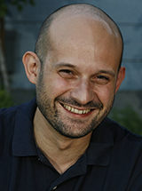
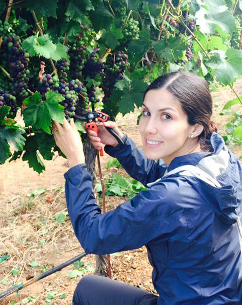
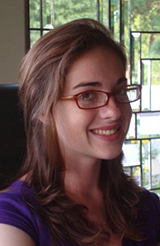
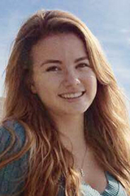

People

Dario Cantu
Assistant Professor of Systems BiologyEducation
2009 PhD Plant Biology, UC Davis
2004 BS-MSc Agronomy, University of Milan (Italy)
Dario's Google Scholar Page
Dario joined the V&E Department at UC Davis in October 2012 and is currently accepting students from the Plant Pathology, Horticulture and Agronomy, and Viticulture and Enology graduate groups.
Current lab members

Abraham Morales-Cruz
PhD Student (GGHA)Abraham received his B.S. in Biotechnology Engineering from the Instituto Tecnológico de Costa Rica in 2012. Before joining the Cantu lab in 2013, Abraham worked at the Seed Biotechnology Center at UC Davis. At SBC he conducted research on pepper genomics, focusing on the discovery of genes associated with a major QTL of capsaicinoid biosynthesis. In the Cantu lab he uses genomics and bioinformatics to study the molecular bases of grapevine trunk diseases.
Abraham's Google Scholar Page

Bárbara Blanco-Ulate
PostdocBárbara earned her undergraduate degree in Biotechnology Engineering from the Instituto Tecnológico de Costa Rica. During her PhD under the supervision of Drs. Powell and Labavitch Barbara made interesting discoveries on how susceptibility to pathogens is regulated during tomato fruit ripening. In the Cantu Lab Barbara's research focuses on studying the impact of microbial pathogens on plant metabolism by integrating transcriptional and metabolic data.
Bárbara's Google Scholar Page
Katherine Amrine
PostdocKatie received her undergraduate bachelor's degrees in Mathematics and Molecular Biology from the University of Wyoming in 2008 where she conducted research identifying elevated positive selection in Embryophyte lineages in the lab of Dr. David Liberles. She then went directly to the University of California, Merced where she obtained her PhD in Quantitative and Systems Biology in the lab of Dr. David Ardell developing statistical methods to quantify system interactions during protein translation identifying phylogenetic signal. In the Cantu Lab, Katie applies genomics and bioinformatics to investigate the disease resistance networks of grapevine and the mechanisms of pathogenicity of fungal pathogens of grapevines. Katie's Google Scholar Page

Rosa Figueroa-Balderas
Senior Research ScientistRosa Figueroa-Balderas completed her Ph.D. in Biochemical Sciences at the Institute of Biotechnology in the National University of México (IBT-UNAM). She joined PIPRA/UCDavis in 2007 with an UCMexus-Conacyt postdoctoral fellowship to develop marker-free transformation technologies to genetically improve crops of significance to California. Throughout her postdoctoral training at UCDavis, Rosa designed and built complex plant transformation vectors with maximum freedom-to-operate to generate marker-free plants. She has collaborated with several Ag-companies designing plant transformation vectors and developing molecular characterization of thousands of independent transformation events with pre-commercial purposes. Rosa's Google Scholar Page
Zirou Ye
Research assistantZirou is a second year international student from China. She has been a volunteer of an environmental protection NGO since 1998. In 2012 she was admitted by UC Davis Environmental Science and Management major. Then, her interest toward plant science and wine made her start learning Viticulture and Enology and she finally transferred to a double VEN and Economics major. She joined the Cantu lab at the end of 2013, where she works on grape pathogen projects.

Jeri Hoover
Research assistantJeri is a Junior transfer student from Mendocino College. She originally transferred in as a Biochemistry and Molecular Biology student, but craved a more hands-on and creative major. After browsing through the UC Davis catalogue, she happened upon Viticulture and Enology, realizing it was exactly what she was looking for. Her interest in research and genetics led her to Cantu Labs in Winter 2015 where she assists Abraham with his study of fungal grapevine trunk pathogens.
Jade Hendry
Research assistant
Gabrielle (Ella) Allenbeck
Research assistantElla is a sophomore in the Viticulture and Enology program. While the enology side of the major originally attracted her to it, she found her true passion in plant science and plant pathology, directing her towards the viticulture side. Her participation in the University Honors Program lead her to the Cantu lab in search of research opportunities. She joined the lab in the spring of 2015, and works with Abraham Morales-Cruz on deep sequencing techniques of fungal trunk pathogens.